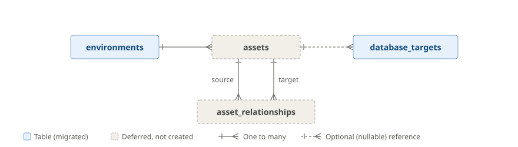

Data Model#
PostgreSQL is Heartbeat's durable system of record for product metadata: inventory, monitored-target metadata, investigation requests and results, alert and report metadata. It is not a telemetry store.
The schema is defined by the migrations in db/migrations
(0001_foundations, 0002_audit_outbox, 0003_login_roles, 0004_probe_definitions, then 0005_database_targets), which are authoritative. If this
page and the migrations disagree, the migrations win; please fix this page.
Status: the schema is migrated and covered by tests. The API (
apps/api) writesusers,user_rolesandaudit_outboxso far, throughapi users create-admin, logins (users.last_login_at, upgraded password hashes) and the users API, the inventory,environments,applicationsandapplication_components, andtelemetry_sources, through/api/v1(inventory, telemetry sources); the other tables wait for its later endpoints. The DB collector takes its targets from YAML, not these tables (ADR 0002).
What PostgreSQL does not store#
See ADR 0001 for the reasoning.
| Data | Where it lives instead |
|---|---|
| Raw or derived metrics, live alert evaluation | Prometheus |
| Raw or normalized logs, session evidence | Loki |
| Alert grouping, deduplication, silencing, delivery | Alertmanager |
| Queues, locks, retries, idempotency keys, short-lived caches, login sessions | Redis (ADR 0013) |
| Integration endpoints, Grafana URL templates, credential references, collector desired state | config/integrations.yaml / Kubernetes ConfigMaps |
| Audit records | Loki, as OTLP log records; written first to a transient outbox in the change's transaction (ADR 0016) |
| Report binaries | Object storage or filesystem (planned); PostgreSQL keeps only artifact_uri |
Tables deliberately not created in the MVP:
| Table | Why not |
|---|---|
outsystems_sources |
OutSystems is a source type, not a domain object parallel to applications. Its settings live in telemetry_sources.config. Promote to a table only if the settings become large, queryable or constraint-heavy. |
session_identity_mappings |
Sessions are high-volume, potentially sensitive and telemetry-derived; they are reconstructed from Loki/Prometheus at investigation time. |
integration_connections, grafana_links |
Deployment-owned YAML and URL templates. Add only if operators need UI-editable mappings. |
audit_events |
Audit records are OTLP log records in Loki; the API's audit_outbox only holds them until the OTel Collector accepts them (ADR 0016). Add only for relational audit search or compliance exports. |
collector_instances, collector_assignments |
Would conflict with YAML/Kubernetes as the collector's desired state. Runtime state is exposed via /metrics, /readyz and logs. |
assets, asset_relationships |
Deferred until SQL Server/host topology is in scope (see deferred topology). |
Conventions#
- Primary keys are UUIDs (
gen_random_uuid(),pgcrypto). - Every mutable table has
created_atandupdated_at. - Status and type columns use
CHECKconstraints where values are stable (for examplestatus in ('active','disabled')). jsonbis used only for flexible provider or rule configuration and labels, never for core relational data, and is not over-constrained early.- Secrets are never stored. Columns such as
credential_refandtarget_refhold references resolved at runtime. - Prefer disabling (
status,enabled) over deleting. Most foreign keys areON DELETE RESTRICT. - There is one ownership path per record. Application-owned rows derive their
environment through
applications.environment_idand do not duplicate it.
Entity-relationship diagram#
erDiagram
users ||--o{ user_roles : has
roles ||--o{ user_roles : grants
environments ||--o{ applications : contains
applications ||--o{ application_components : decomposes_into
applications ||--o{ telemetry_sources : emits_from
users |o--o{ normalization_rules : creates
environments ||--o{ database_targets : contains
database_targets ||--o{ probe_assignments : probes
probe_definitions ||--o{ probe_assignments : defines
environments ||--o{ investigations : scopes
applications ||--o{ investigations : subject_of
users ||--o{ investigations : creates
investigations ||--o{ investigation_jobs : runs
investigations ||--o{ investigation_results : produces
investigations ||--o{ evidence_links : references
applications ||--o{ alert_policies : owns
applications ||--o{ adaptive_baselines : owns
applications ||--o{ notification_routes : owns
applications ||--o{ alert_events : receives
alert_policies |o--o{ alert_events : emits
report_templates ||--o{ report_schedules : schedules
applications ||--o{ report_schedules : owns
applications ||--o{ report_runs : reports
report_schedules |o--o{ report_runs : triggers
users |o--o{ report_runs : requests
users {
uuid id PK
text email UK
text display_name
text status "active | disabled"
text password_hash "argon2id PHC, nullable"
timestamptz last_login_at
}
roles {
uuid id PK
text name UK
text description
}
user_roles {
uuid user_id PK,FK
uuid role_id PK,FK
}
environments {
uuid id PK
text name
text slug UK
text type "production | staging | development | test"
text description
text status
jsonb labels
}
applications {
uuid id PK
uuid environment_id FK
text name
text platform
text owner_team
text criticality "low | medium | high | critical"
text status
}
application_components {
uuid id PK
uuid application_id FK
text name
text component_type
text runtime_name
jsonb labels
}
telemetry_sources {
uuid id PK
uuid application_id FK
text source_type
text ingest_mode "otlp | file | api | agentless"
text status
jsonb config
}
normalization_rules {
uuid id PK
text source_type
text version
boolean enabled
jsonb rule_config
uuid created_by FK "nullable"
}
database_targets {
uuid id PK
uuid environment_id FK
text engine
text name
text host
integer port
text database_name "nullable"
text status
text credential_ref
jsonb labels
}
probe_definitions {
uuid id PK
text engine
text name
integer version
boolean builtin
text overrides "nullable"
text category
text description
integer default_interval_seconds
integer timeout_ms "nullable"
text query_template "nullable"
boolean enabled
}
probe_assignments {
uuid id PK
uuid database_target_id FK
uuid probe_definition_id FK
integer interval_seconds
boolean enabled
jsonb config
}
investigations {
uuid id PK
uuid application_id FK
uuid environment_id FK
uuid created_by FK
text status "queued | running | completed | failed | cancelled"
text subject_type "user | ip | session | request"
text subject_value
timestamptz time_start
timestamptz time_end
jsonb query
}
investigation_jobs {
uuid id PK
uuid investigation_id FK
text status
timestamptz queued_at
timestamptz started_at
timestamptz finished_at
text error_message
}
investigation_results {
uuid id PK
uuid investigation_id FK
text summary
text severity "info | warning | critical"
jsonb result
}
evidence_links {
uuid id PK
uuid investigation_id FK
text source_type
text title
text url
timestamptz time_start
timestamptz time_end
jsonb metadata
}
alert_policies {
uuid id PK
uuid application_id FK
text name
text signal_type
text severity
boolean enabled
jsonb condition
jsonb labels
text rendered_rule_ref
}
adaptive_baselines {
uuid id PK
uuid application_id FK
text signal_key
text window
text method
jsonb parameters
timestamptz last_computed_at
}
notification_routes {
uuid id PK
uuid application_id FK
text name
text channel_type
text target_ref
jsonb routing_rules
boolean enabled
text alertmanager_route_ref
}
alert_events {
uuid id PK
uuid application_id FK
uuid alert_policy_id FK "nullable"
text status "firing | resolved | suppressed"
text severity
text fingerprint
timestamptz started_at
timestamptz resolved_at
jsonb labels
}
report_templates {
uuid id PK
text name UK
text description
text template_type
jsonb template_config
boolean enabled
}
report_schedules {
uuid id PK
uuid application_id FK
uuid report_template_id FK
text cron_expression
text timezone
jsonb recipients
boolean enabled
}
report_runs {
uuid id PK
uuid application_id FK
uuid report_schedule_id FK "nullable"
uuid requested_by FK "nullable"
text status
timestamptz time_start
timestamptz time_end
text artifact_uri
timestamptz started_at
timestamptz finished_at
}
audit_outbox {
bigint seq PK
uuid id UK
timestamptz created_at
jsonb record
}
Domains#
Identity and access#
users, roles, user_roles. Intentionally minimal for the MVP: a shared
SRE/admin-style user is acceptable, with no permission tables, SSO tables or
environment-scoped RBAC yet. Disable users (status = 'disabled') rather than
deleting them; foreign keys restrict deletion.
users.password_hash is the argon2id hash of a local login's password, in the
PHC string format with its parameters; null for a user without one
(ADR 0013). Emails are
stored in lower case, and users_email_lower_uq (unique (lower(email))) keeps
one user per address in any case, whoever writes the row. Migration 0002 adds the admin role, which
api users create-admin grants, and 0003 adds operator and viewer.
They rank viewer < operator < admin, and each API operation declares
the least one it needs (what each role may do).
Admins manage users and their roles through the API; users.updated_at
moves with every change to a user, their roles included.
A login sets users.last_login_at, only while the user is active and still
has the hash it checked: a password change or a disabling locks the row,
ends the user's sessions and wins over a login racing it. Sessions are not
here: they live in Redis.
Audit outbox#
audit_outbox is a queue, not a store
(ADR 0016): each change the
API makes inserts its audit record (record, valid against
audit_record.schema.json)
in the change's transaction, and the API's drainer deletes it once the OTel
Collector has accepted it, normally within seconds. seq orders delivery,
id is the record's id, and created_at gives the age of the oldest row.
Nothing reads a row after delivery; audit records are searched in Loki.
Environment and inventory#
| Table | Meaning | Examples |
|---|---|---|
environments |
Top ownership boundary; everything observable belongs to exactly one. | prod, staging |
applications |
Business system operators care about. Belongs to one environment. | Claims Portal (platform = outsystems_traditional, criticality = high) |
application_components |
A part of an application: what part of the app it is, not where it runs. | OutSystems module ClaimsWeb, screen flow Login, worker auth-worker |
telemetry_sources |
A configured feed of telemetry for one application: which logs and metrics are its own. No environment_id: it is derived through the application. For OutSystems 11, the extraction collector itself stays in YAML (ADR 0017). |
source_type = outsystems, ingest_mode = agentless, config = {"application_name":"Claims"} |
normalization_rules |
Versioned mappings from source-specific fields to Heartbeat's normalized fields. Scoped by source type and version, not environment. | outsystems / default-log-v1: {"session_field":"SessionId","user_field":"UserId"} |
OutSystems Traditional and Reactive are represented through
applications.platform, application_components.component_type and, where
necessary, telemetry_sources.config. Map default OutSystems log fields
faithfully first so existing SRE queries keep working.
What the API keeps true of these rows [4.3]:
applications.environment_idandapplication_components.application_idare set at creation and never updated: an application in another environment is another application, so its history (investigations, alerts, reports) stays with the environment it happened in. A component's environment is its application's, read through the join.environments.slugis the collectors'environmentand the telemetry'sdeployment.environment.name(ADR 0017 §2): lower-case letters, digits and hyphens, 1 to 63, starting and ending with a letter or a digit, and fixed once created.platformandcomponent_typeare identifiers (outsystems_traditional,module): lower-case letters, digits and underscores.labelsare a JSON object of strings, at most 64.telemetry_sources.application_idis fixed like the others, and a source'sconfigis valid against itssource_type's JSON Schema inpackages/config-schema/src/telemetry-sources[4.4]: closed, with credential references only. Within an environment, aconfig.application_namebelongs to one application; every source change takes the environment's row lock (for no key update, which applications being added do not wait for) before it checks, so two changes cannot both find a name free. No migration: the rule spans two tables.- Deletes follow the foreign keys: refused while any row refers to the
environment or application. Components have no status and nothing refers
to them, so they are deleted; environments and applications are disabled.
The one cascade: deleting an application deletes its
adaptive_baselines, which are computed from its telemetry.
Database observability#
database_targets, probe_definitions, probe_assignments describe monitored
databases and versioned probe policies for the future control-plane workflow.
Targets belong to an environment; credential_ref is a reference only.
- Probe definitions are versioned and disabled rather than deleted
(
probe_assignments → probe_definitionsisRESTRICT). Each row is one version, numbered from 1 per engine and name, and never changes exceptenabled, which the API sets on every version of a definition at once; a change to what runs is a new row, so an assignment pins the version it was approved with. Built-in rows (builtin) are the db-collector's SQL Server catalog, seeded by0004with noquery_template, and read-only; a test fails when they and the catalog differ. A custom row's name starts withcustom_, which no built-in's does, so a later seed never meets one; it names the built-in itoverrides, the same in every version, takes its category, and carries aquery_templatechecked as one read-onlySELECT(a check constraint keeps the two kinds apart).timeout_msis null for the collector's default. Managed through/api/v1/probe-definitions. - A target's name, the
targetlabel of its metrics, is unique in its environment (0005). Managed through/api/v1/database-targets, which refuses to delete a target that has assignments: the foreign key would cascade to them. - Every probe must be reviewed for non-blocking behavior before being assigned to a production target.
- There is deliberately no direct
application → database_targetrelation.
Today the collector ignores these tables and reads targets and probes from
config/integrations.yaml; see
database observability.
Investigations and evidence#
investigations stores the question: application, derived environment,
subject (user, ip, session, request), time window and filters.
investigation_jobs tracks asynchronous execution; a partial unique index
allows only one queued or running job per investigation.
investigation_results stores bounded summaries, and evidence_links points to
Grafana, Loki or Prometheus views. Raw evidence is never copied into
PostgreSQL. Jobs, results and links cascade when an investigation is removed by
a retention job.
Alerting#
Alerting is application-owned. alert_policies stores policy intent, rendered
into Prometheus rules (rendered_rule_ref). adaptive_baselines stores computed
threshold parameters. notification_routes stores route intent and references
to Alertmanager routes. alert_events records alert lifecycle and fingerprints
from Alertmanager for history, reporting and investigation context;
alert_policy_id is nullable because external or unmapped alerts may arrive.
PostgreSQL never evaluates alerts.
Reporting#
Reporting is application-owned. report_templates defines structure,
report_schedules defines cadence, timezone and recipients, and report_runs
records executions. report_schedule_id is null for on-demand runs, and
requested_by is null for scheduled runs. artifact_uri is a pointer only.
Environment-level reports are a later aggregation across applications.
Relationship and delete rules#
| Child → parent | On delete | Notes |
|---|---|---|
user_roles → users, roles |
restrict | Composite primary key (user_id, role_id) |
applications → environments |
restrict | Unique (environment_id, name) |
application_components → applications |
restrict | Unique (application_id, name, component_type) |
telemetry_sources → applications |
restrict | Index (application_id, source_type, status) |
normalization_rules → users (created_by) |
set null | Unique (source_type, version); system rules have no creator |
database_targets → environments |
restrict | Unique (environment_id, engine, host, port, lower(coalesce(database_name,''))) and (environment_id, name) |
probe_assignments → database_targets |
cascade | Unique (database_target_id, probe_definition_id) |
probe_assignments → probe_definitions |
restrict | Definitions unique by (engine, name, version); an assignment pins a version |
investigations → applications, environments, users |
restrict | time_end >= time_start |
investigation_jobs, investigation_results, evidence_links → investigations |
cascade | One active job per investigation |
alert_policies, notification_routes → applications |
restrict | Unique (application_id, name) |
adaptive_baselines → applications |
cascade | Unique (application_id, signal_key, window, method) |
alert_events → applications |
restrict | Unique (application_id, fingerprint, started_at) |
alert_events → alert_policies |
set null | |
report_schedules → applications, report_templates |
restrict | Unique (application_id, report_template_id, cron_expression, timezone) |
report_runs → applications |
restrict | |
report_runs → report_schedules, users |
set null |
Deferred topology#
Added only when SQL Server or host topology work needs explicit inventory. Assets describe where things run; keep them minimal so they don't turn into a CMDB.

Planned hooks when enabled: database_targets.asset_id (nullable, set null),
applications.primary_asset_id, application_components.asset_id, unique
assets(environment_id, name) and
asset_relationships(source_asset_id, target_asset_id, relationship_type).
Examples: prd-iis-01 (server, windows), sql-prod-01 (database_server,
sqlserver), public-lb (load_balancer, nginx).